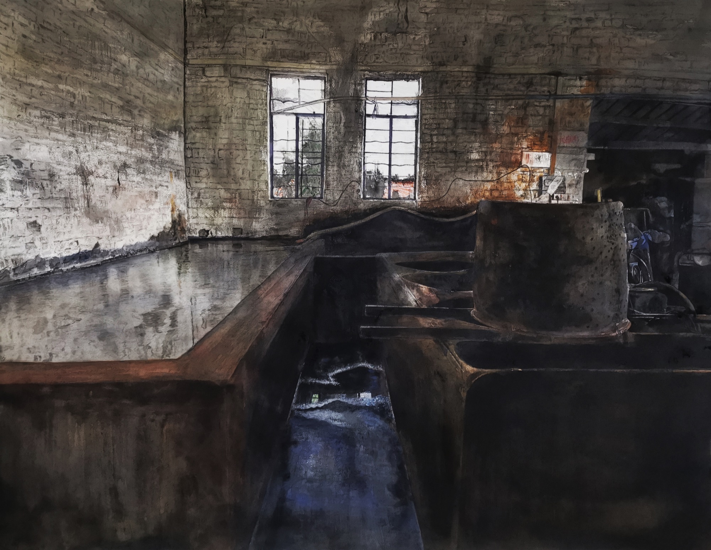

Realm of Stillness
和平静域

- Artwork ID / 作品编号
- KW-W-000011
- Year / 年份
- 2023
- Medium / 媒介
- Watercolor on paper / 纸本水彩
- Dimensions / 尺寸
- 88 × 112 cm (H × W / 高 × 宽)
Realm of Stillness depicts a workplace during the workers’ lunch break. Machinery has stopped, and light from the windows falls across water, walls, and metal equipment, making traces of use, wear, and maintenance visible. The pause still carries the expectation that labor will resume. The work approaches peace as a perceptible condition of daily life: the possibility of working, resting, and maintaining a dignified relation with one’s material environment.
《和平静域》描绘工人午休时暂时安静下来的工作场域。机器停止运转，窗外光线落在水面、墙体与金属设备上，让使用、磨损和维护留下的痕迹清晰可见。空间的停顿仍包含劳动即将继续的时间感。作品把“和平”理解为一种可被感知的生活条件：人能够劳动、休息，并与物质环境保持有尊严的关系。